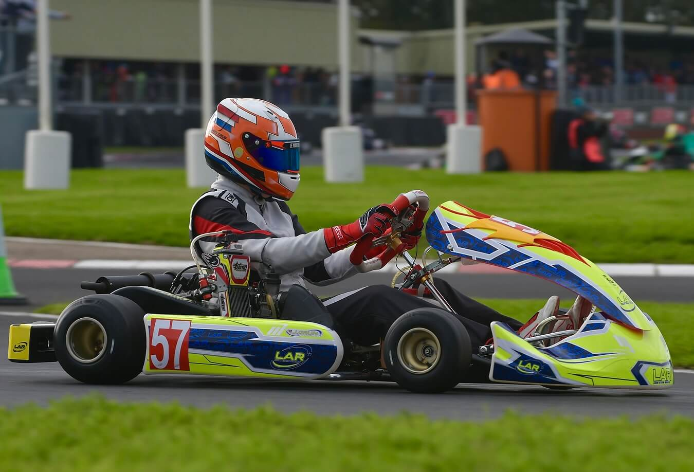
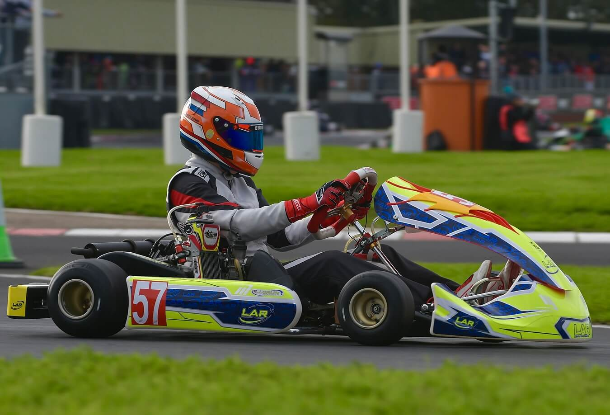
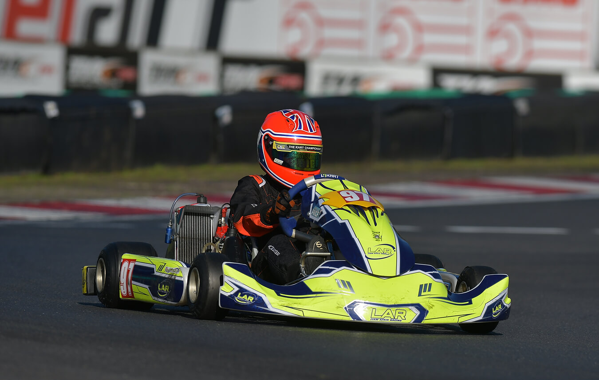
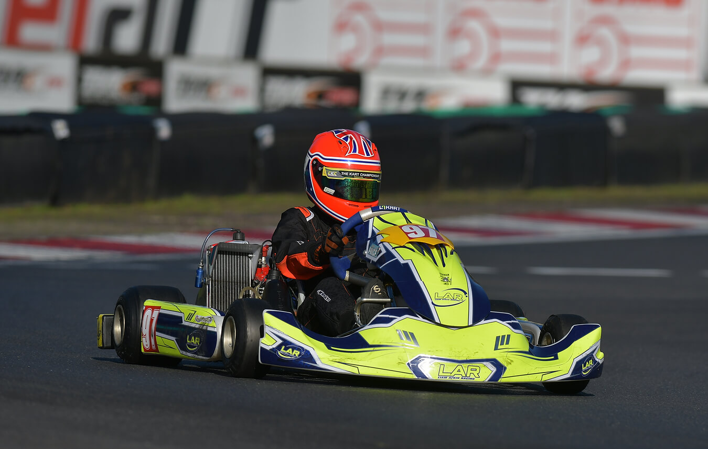

Fueling young talent, one race at a time
Welcome to Liam Atkin Racing (LAR) — where passion meets performance. With over 30 years of karting experience, LAR is built on a foundation of family values and competitive spirit. We proudly offer a supportive yet professional environment for young drivers and their families. LAR provides dedicated support at every stage of a drivers development, encouraging both newcomers to the sport and those pursuing competitive advancement.

 


 
